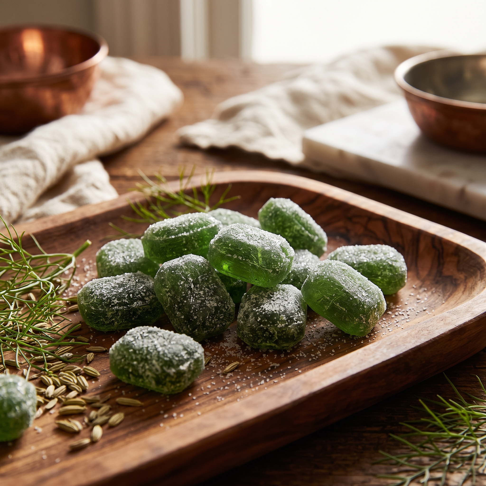
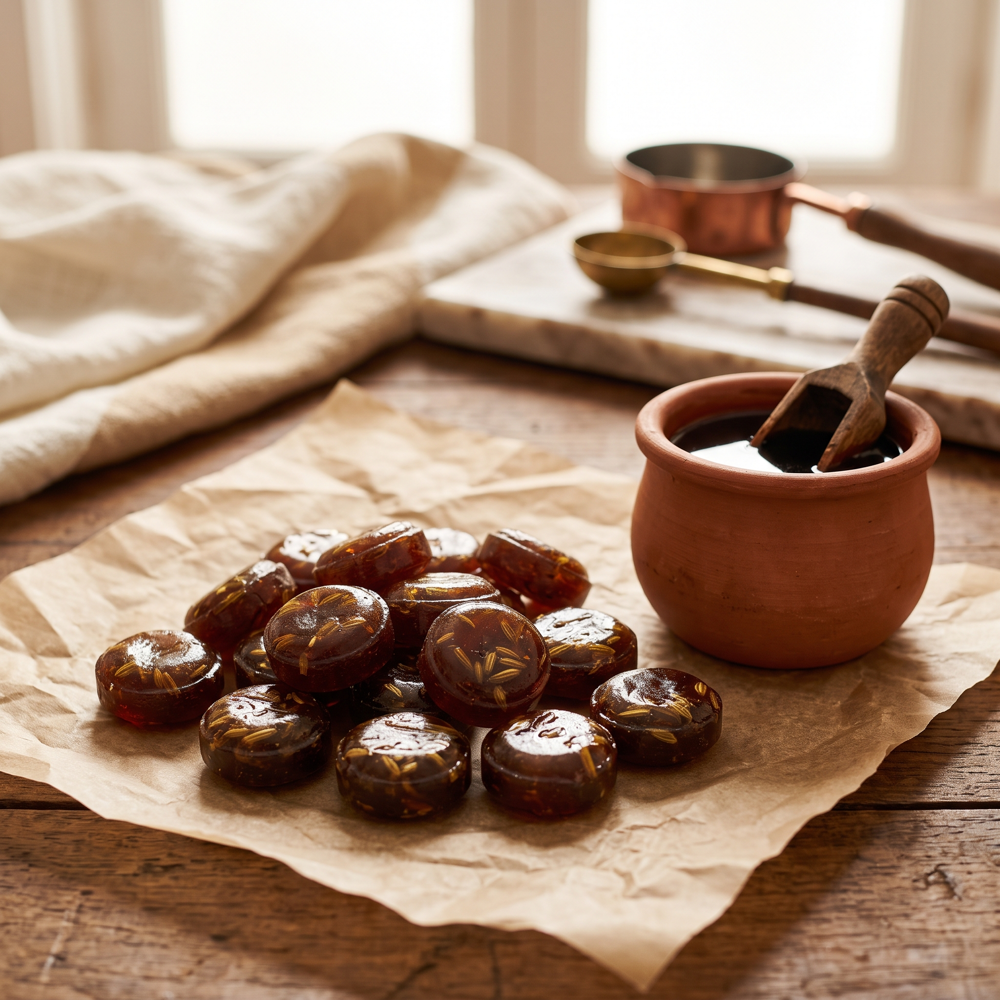
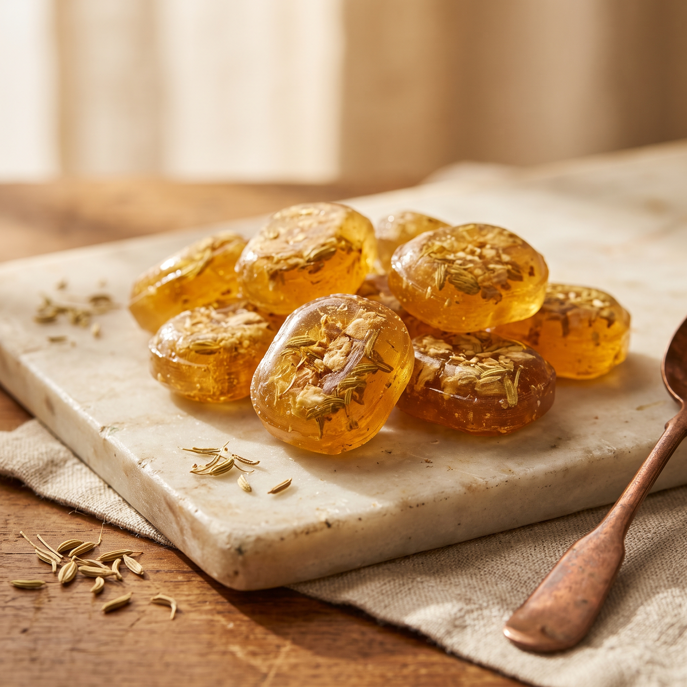
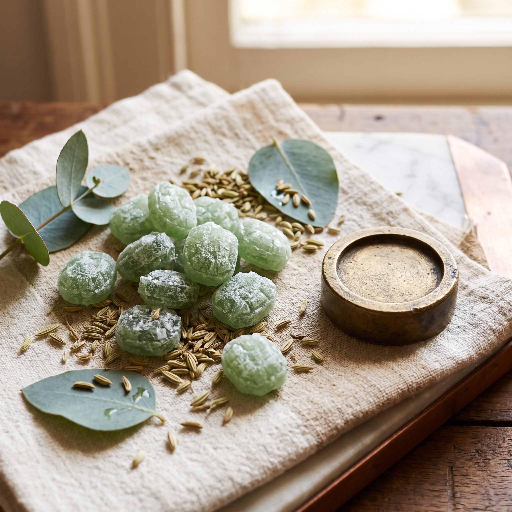
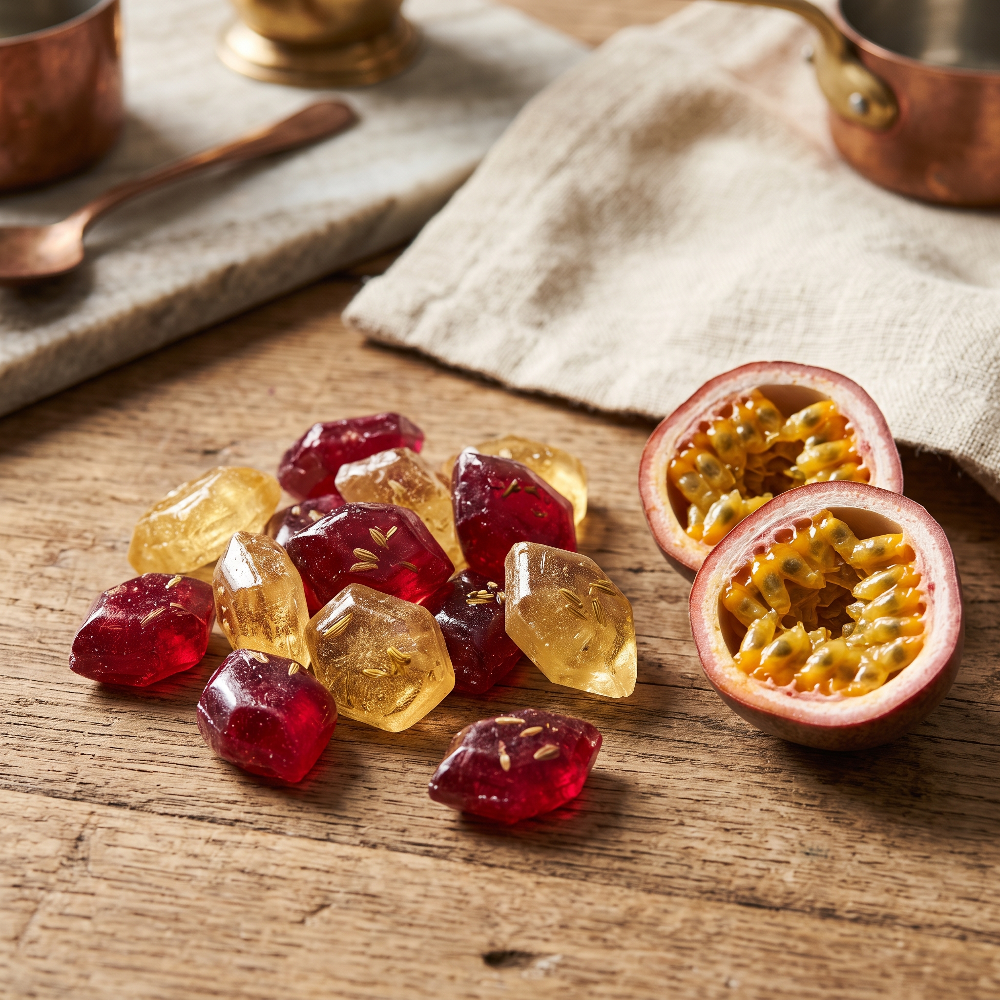
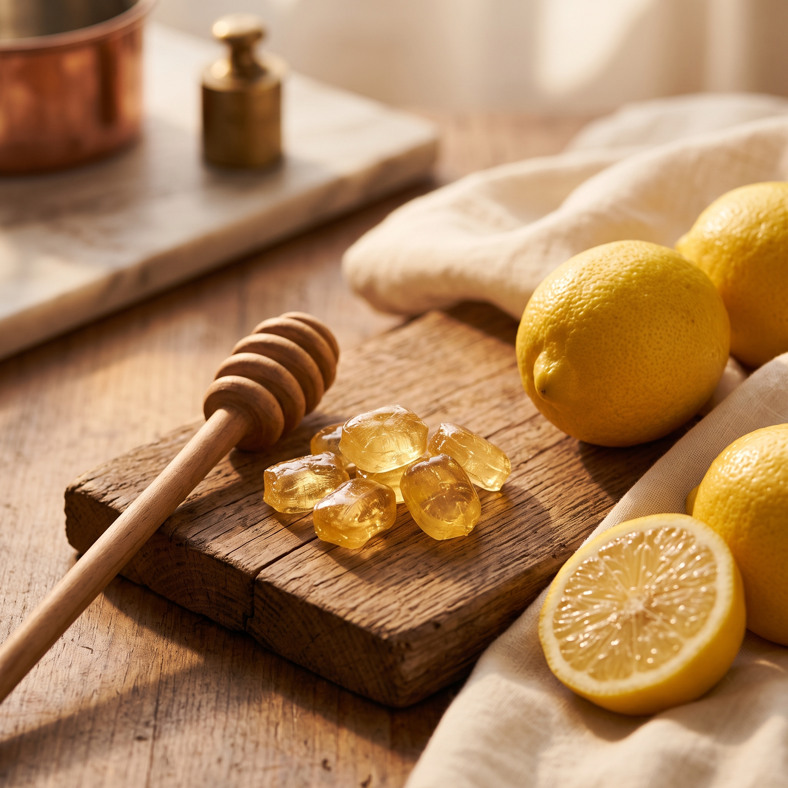
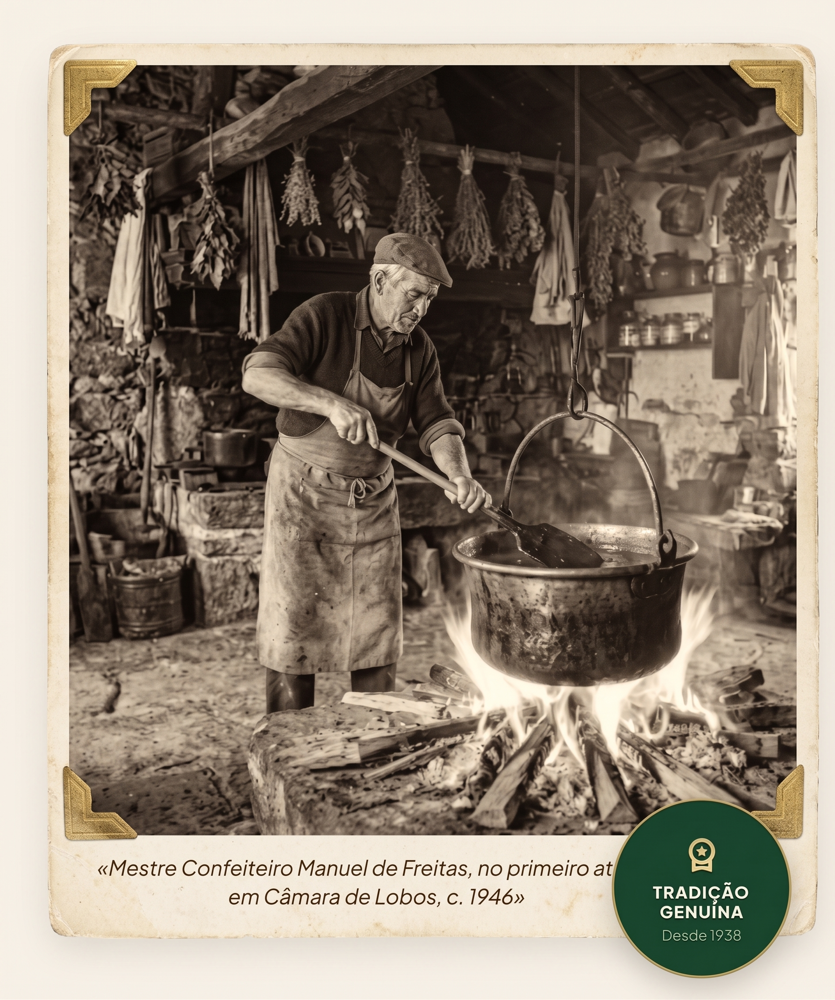

Rebuçado Clássico de Funcho
Receita original de 1938. Sementes selvagens maceradas, açucar ponto-rebuçado e a frescura anisada inconfundível dos vales de Câmara dos Lobos.
3,50€ · saco 100g
Rebuçados de funcho feitos à mão em Câmara de Lobos, desde 1952.
Ver sabores
Receita original de 1938. Sementes selvagens maceradas, açucar ponto-rebuçado e a frescura anisada inconfundível dos vales de Câmara dos Lobos.
3,50€ · saco 100g

Funcho com mel de cana da Madeira. Escuro, denso e com o travo tostado dos engenhos da ilha.
4,00€ · saco 100g

Gengibre fresco ralado sobre a base de funcho. Aquece a garganta. O preferido do inverno.
4,50€ · saco 100g

Folha de eucalipto das encostas do Funchal. Respira-se antes de se provar.
5,00€ · saco 100g

Maracujá da ilha com semente de funcho. Ácido no início, doce no fim.
5,50€ · saco 100g

Limão dos quintais de Câmara de Lobos. O mais fresco dos seis, e o que as crianças escolhem.
3,50€ · saco 100g

Quando o navegador João Gonçalves Zarco desembarcou nas costas bravias da ilha da Madeira em 1419, encontrou uma baía ampla, recortada por encostas vulcânicas verdejantes, densamente povoadas por uma erva aromática de folhas plumosas e sementes douradas: o funcho bravo (Foeniculum vulgare). Fascinado pelo aroma adocicado que se desprendia do solo ao calor do sol atlântico, chamou àquela enseada "Funchal".
Séculos mais tarde, em 1938, o Mestre Manuel de Freitas começou a ferver as sementes silvestres apanhadas nas arribas de Câmara de Lobos em calda de açúcar cristalino sobre caldeirões de cobre batido. O saber empírico e a paciência do fogo de lenha permitiram criar rebuçados cristalinos que acalmavam a tosse dos pescadores após noites frias na faina do peixe-espada preto.
Hoje, a terceira geração da família Freitas mantém religiosamente a mesma receita, a escuta atenta do crepitar da calda e a colheita manual matinal ao longo das levadas ancestrais.
O aroma do funcho a cozer em calda de cana é o perfume eterno da nossa infância na Madeira. Não é apenas açúcar; é a memória viva da nossa terra.
Sem corantes, conservantes ou aditivos industriais. Apenas tempo, mestria e respeito pelos ciclos da natureza madeirense.
Funcho selvagem colhido à mão nas encostas ensolaradas da ilha ao romper da alvorada, quando a concentração de óleos essenciais na flor e semente atinge o seu auge.
Das 06h às 09h
Extração paciente dos óleos essenciais puros através de infusão a vapor a temperatura controlada, preservando os flavonoides e a intensidade aromática natural.
18 horas de maceração
Cozedura a fogo vivo em tachos de cobre batido de 1938. O mestre confeiteiro monitoriza o "ponto de rebuçado" ouvindo as bolhas e usando apenas colher de pau.
145 °C, ponto exato
Corte artesanal e arrefecimento em mesas de pedra mármore regional de São Vicente. Polvilhados com pó de açúcar fino para evitar colagem e selados à mão.
Mármore natural vulcânico
Formatos e remessas
Entregas refrigeradas em toda a Madeira e envio expresso para o continente.
Individual
O companheiro de bolso ideal para caminhadas nas levadas.
3,50 € / 100 g
Mais popular
Familiar
Para saborear com os seus.
7,80 € / 250 g
Presente e Coleção
Edição colecionador, com estojo em madeira.
18,50 € / conjunto
Restauração & Hotéis
Sacos de 1kg selados a granel para quintas charmosas, restaurantes e boutiques.
24,50 € / kg(ou consulta)
Testemunhos
Entrar nesta loja é regressar aos anos 40.
Os melhores!
Eu amo Funchos!